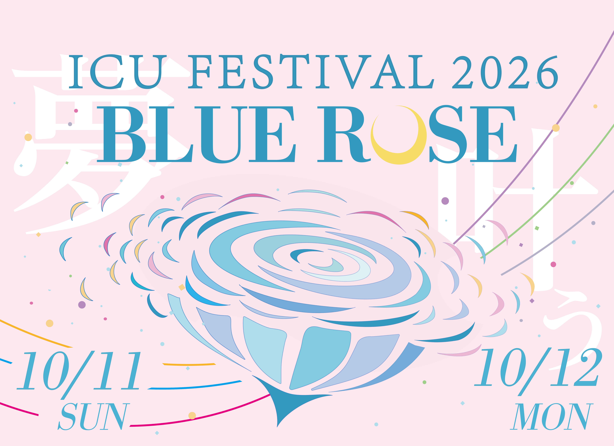

BUS ACCESS
当日はバスの増便があります
通常便に加えて増便を予定しています。ご来場の際は、公共交通機関をご利用ください。
掲載時刻表をご確認のうえ、時間に余裕をもってお越しください。


ICU FESTIVAL 2026
国際基督教大学のキャンパスに、青いバラが咲く二日間。人と企画と偶然が出会う、今年だけの学園祭。
TODAY'S NOTE
開催中の変更や会場からのお知らせを掲載します。
最新情報をチェックして、キャンパスをめぐろう。
BUS ACCESS
通常便に加えて増便を予定しています。ご来場の際は、公共交通機関をご利用ください。
掲載時刻表をご確認のうえ、時間に余裕をもってお越しください。
VOTE FOR BAKAYAMA-CHAN
我らがばか山ちゃんが総選挙に出馬中！！一日一票の投票で応援しましょう！
投票期間：2026.9.15-2026.11.30(23:59)
EXPLORE THE FESTIVAL
気になる企画から、BLUE ROSEの世界へ。